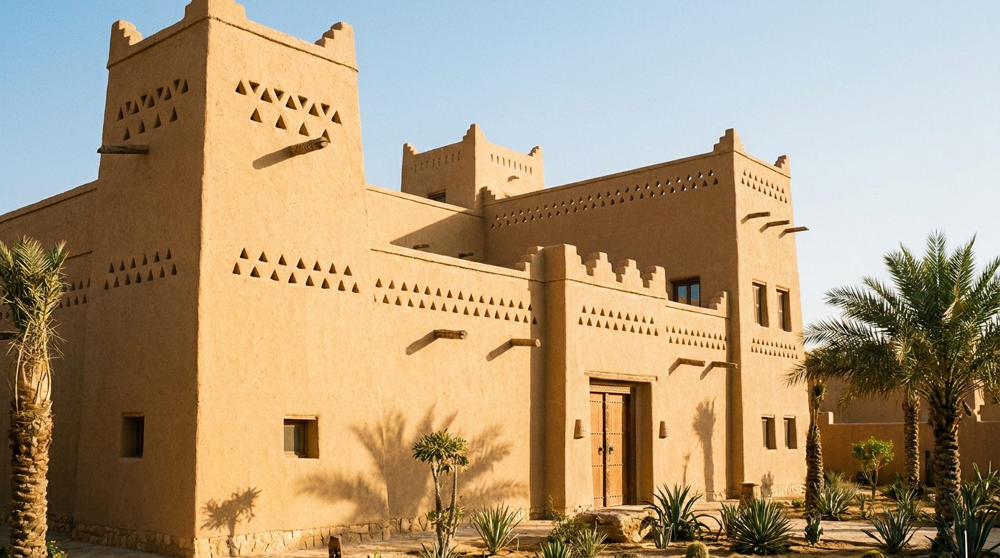
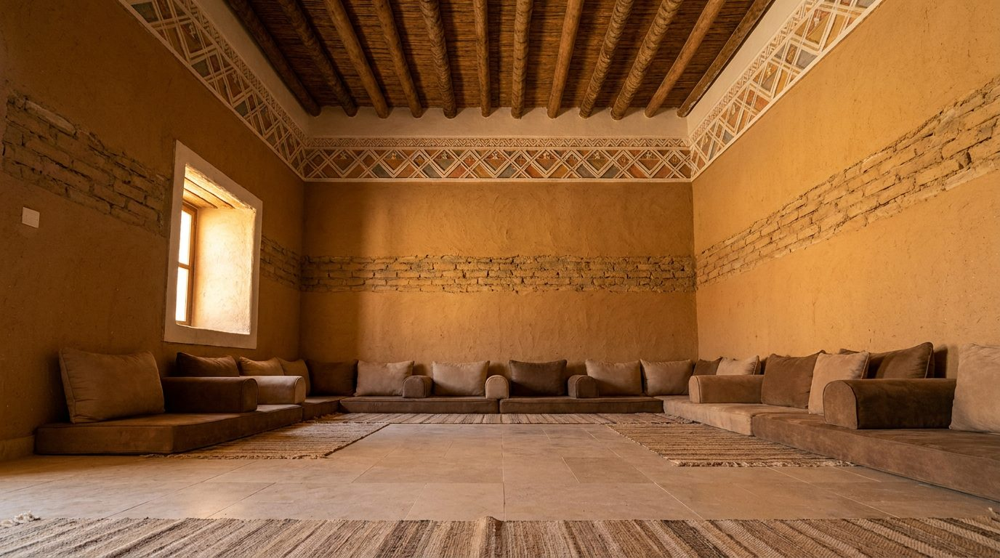

Atlante · INT-SA-01 · Arabia Saudita · Golfo
Villa con majlis a Riyadh, scala domestica in muratura del Najd
Esempi · esterno e interno


Perché funziona
A Riyadh il committente privato costruisce case grandi ma vuole ricevere in stanze che parlano di famiglia e territorio: il majlis è il test più duro per un brand straniero. Il made in Italy deve entrare come artigianato confrontabile (ottone martellato, legno, tessuto), non come scenografia orientaleggiante di archetti e lanterne. La muratura cruda resta il fondo e il prodotto è l'unico oggetto levigato della stanza.
Architettura · elementi riproducibili
- majlis rettangolare 9x6 m, soffitto 4,6 m, muri in labin con giunto a vista 40 mm
- feritoie triangolari di ventilazione nella fascia alta, passo 600 mm
- fregio in gesso dipinto a 3,2 m, h 350 mm, motivi geometrici
- travi in tronco di palma a vista, interasse 1,2 m, diametro 180-220 mm
- nicchie a muro h 700 mm per caffettiere e lampade
- pavimento in calcare opaco 600x600 mm, nessun tappeto fisso
- porta a due battenti h 2,6 m in legno tinto scuro
- proporzione chiave: sviluppo orizzontale 2:1, sedute basse h 380 mm lungo tre lati
Fatto verificato: il Palazzo Murabba a Riyadh è classificato in stile Najd; muratura di terra cruda, aperture e travi di palma sono gli elementi ricorrenti di quel linguaggio.
Fatto verificato: Diriyah, a nord-ovest di Riyadh, comprende il distretto storico di At-Turaif, patrimonio UNESCO.
Valutazione: il majlis è la stanza in cui il padrone di casa riceve, quindi deve leggere come casa e non come lobby d'albergo: niente colonne a tutta altezza, niente atrio.
L'artigianato (gesso inciso, ottone martellato) va mostrato in un dettaglio, non ripetuto su tutta la parete: è ciò che separa il loud colto dal loud alberghiero.
Luce
Prompt di generazione (EN)
Empty domestic majlis, 9 x 6 m, ceiling 4.6 m, walls of ochre mud brick (labin) with 40 mm visible joints and a band of triangular ventilation perforations near the top, painted gypsum frieze at 3.2 m, floor of honed limestone 600 x 600 mm, dry palm-trunk beams at 1.2 m centres, deep window reveals 400 mm, no furniture except a 380 mm stone ledge along three walls. One key light: low sun through a single recessed window on camera left at 45 degrees, 5000 K, warm bounce from the brick, rest of the room two stops darker. 28 mm lens, camera height 1.2 m, two-point perspective, verticals parallel, no text, no logos, no mirror.